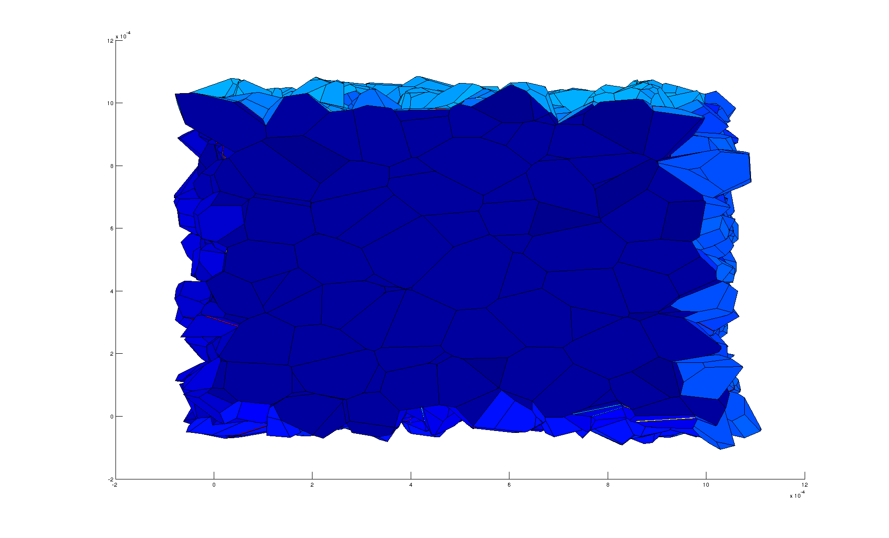

Tutoriel Wettability and ClusterShape
%Dans ce tutoriel nous allons voir comment faire une invasion percolation %en définissant nous même les angles de contact. Nous allons apprendre à %gérer les poreData et les linkData qui contiennent les propriétés des %pores et des liens. Enfin nous allons exporter le réseau et les résultats %de simulation vers Paraview pour visualiser les résultats.
%Commençons par créer un réseau 3D. [ network,viewer ]=CreateNetwork('1block3D'); inletLink=network.GetLinksFrontiere(1);outletLink=network.GetLinksFrontiere(2);
Generation du reseau... Reseau genere. Duree : 0 minutes 16.614728 s.
%L'objet network contient des data associées aux pores et liens. Ce peut %etre les propriétées géométriques des pores et liens, des résultats de %simulations... %On peut accéder aux poresData et linkData directement dans l'interface %graphique de Matlab en double cliquant sur l'objet network. Il est aussi %possible de les manipuler en ligne de commande. % %Ces données peuvent servir dans les algorithmes physiques %(conductances, tailles...). C'est le cas pour l'invasion percolation qui %utilise les diametres des liens et les angles de contact dans les liens. %Pour faire une invasion percolation avec des angles de contact %personnalises, il faut ajouter a la liste des link data un tableau %contenant les angles de contact. On utilise la fonction AddNewLinkData %avec le nom 'ContactAngle'. contactAngle=80; theta=contactAngle*pi/180*ones(1,network.GetNumberOfLinks); network.AddNewLinkData(theta,'ContactAngle'); network.GetLinkDataList network.GetLinkDataList.ContactAngle;
ans =
ContactAngle: [1x9944 double]
%Calculons donc une invasion percolation avec l'angle de contact de 80° %defini a l'etape precedente. Pour visualiser les pores envahis dans %Paraview ultérieurement, il faut rajouter une liste de pores envahis aux %poreData du réseau. On voit aussi que la fonction %ComputeInvasionPercolation a rajoute la liste des diametres de liens qui %lui manquait. [cluster,breakthroughPressure,invasionPressureList]=ComputeInvasionPercolation(network,inletLink,outletLink,'currentWettability'); network.AddNewPoreData(cluster.GetInvadedPoresBooleans,'InvadedPores_80'); network.GetPoreDataList network.GetLinkDataList
Running Invasion Percolation
Calcul du diam�tre des liens...
Calcul du diam�tre des liens termin�. Dur�e : 0 minutes 46.511362 s.Calcul d'invasion percolation termine. Duree : 0 minutes 49.672785 s.
ans =
InvadedPores_80: [1x1100 double]
ans =
ContactAngle: [1x9944 double]
Diameter: [1x9944 double]
%Faisons maintenant une invasion percolation avec un angle de contact %uniforme de 110°. On retire d'abord l'ancien linkData 'ContactAngle', on %ajoute le nouveau puis . contactAngle=110; network.RemoveLinkData('ContactAngle'); theta=contactAngle*pi/180*ones(1,network.GetNumberOfLinks); network.AddNewLinkData(theta,'ContactAngle'); [cluster,breakthroughPressure,invasionPressureList]=ComputeInvasionPercolation(network,inletLink,outletLink,'currentWettability'); network.AddNewPoreData(cluster.GetInvadedPoresBooleans,'InvadedPores_110'); network.GetPoreDataList network.GetLinkDataList
Running Invasion Percolation
Calcul d'invasion percolation termine. Duree : 0 minutes 1.302271 s.
ans =
InvadedPores_80: [1x1100 double]
InvadedPores_110: [1x1100 double]
ans =
Diameter: [1x9944 double]
ContactAngle: [1x9944 double]
%Calculons maintenant la diffusion. Pour visualiser les concentrations dans %Paraview ultérieurement, il faut rajouter les concentrations aux data du %réseau. boundaryConditions.inletLink = inletLink; boundaryConditions.outletLink = outletLink; boundaryConditions.inletType = 'Dirichlet'; boundaryConditions.outletType = 'Dirichlet'; boundaryConditions.inletValue = 1; boundaryConditions.outletValue = 0; concentrations=ComputeDiffusion(network, cluster, boundaryConditions); network.AddNewPoreData(concentrations,'DiffusionConcentrations');
Calcul des conductances de Diffusion... Calcul des conductances de diffusion termine. Duree : 0 minutes 0.001411 s.Solving linear system minres converged at iteration 15 to a solution with relative residual 5.9e-05. Solving linear system finished. Time spent : 0 minutes 0.091574 s.
%La fonction ComputeDiffusion utilise les conductances de diffusion des %liens. Si 'ConductancesDiffusion' n'est pas encore defini dans les %linkData du reseau, la fonction la calcule et l'ajoute au reseau pour une %future utilisation. network.GetLinkDataList
ans =
Diameter: [1x9944 double]
ContactAngle: [1x9944 double]
ConductancesDiffusion: [1x9944 double]
%On peut visualiser le reseau dans Matlab avec le viewer. Neanmoins les %fonctionnalites du viewer sont moins etendues en 3D qu'en 2D et le rendu est moins bon. %Cela est du aux limitations des outils de visualisation de Matlab. viewer.View('Network')
%Il est possible d'exporter le reseau dans Paraview pour une meilleure visualisation. Pour cela on ecrit un %fichier .vtk. Dans ce fichier il y aura des informations sur la geometrie %du reseau et les data associes aux pores, liens etc... Il y a deux types %de rendu d'un reseau, Ball and Stick et maillage. Le rendu maillage est %disponible seulement pour les reseaux des classes PoreNetworkMesh et %classes derivees. network.ExportToParaview('NetworkTutorial_Wettability')
G�n�ration du fichier VTK... Fichier VTK g�n�r�. Dur�e : 0 minutes 16.009815 s.